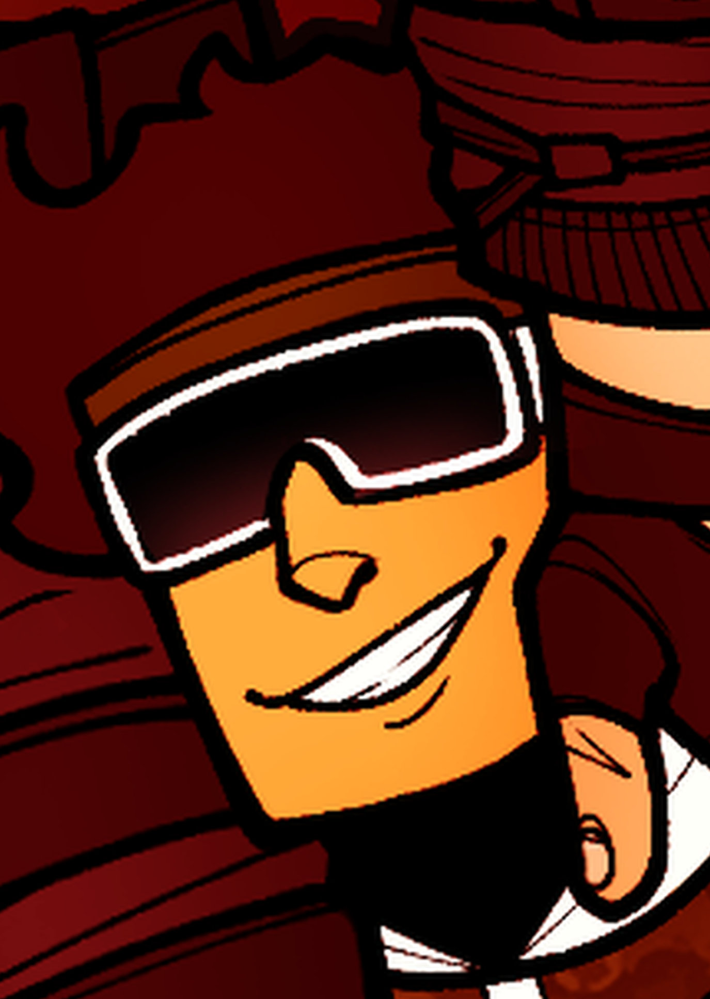
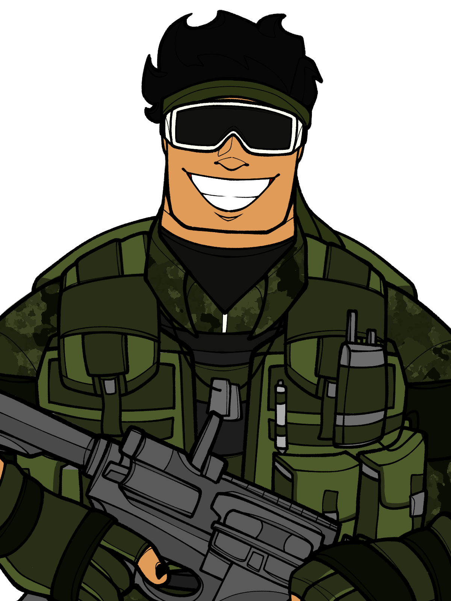
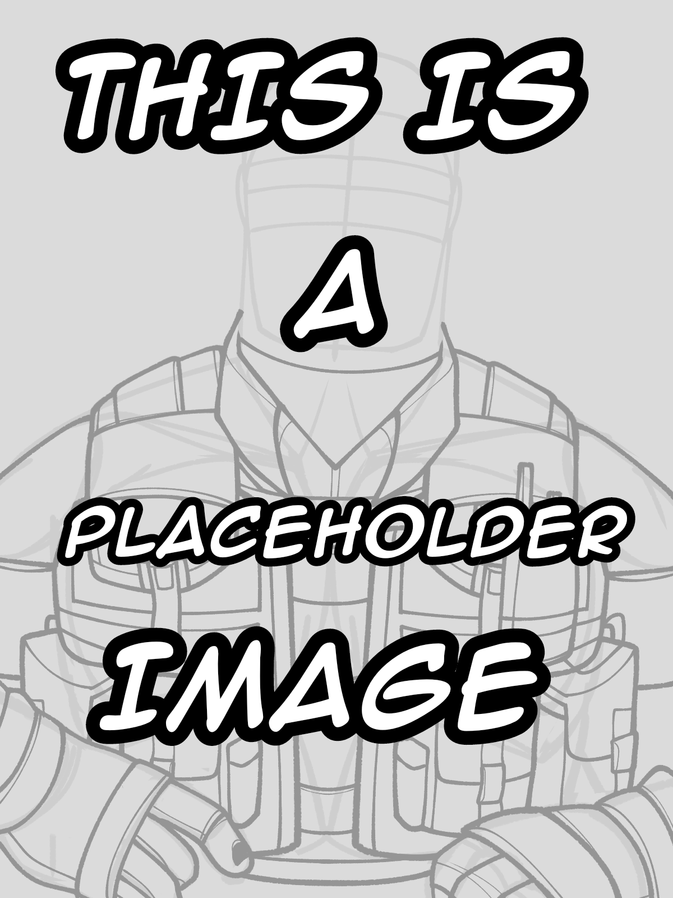

Call of Duty Wiki - Oc
Markus "Yama"zaki de Tales
"Born in Brazil but raised in Japan, Yama was once one of the most well know and feared yakuza men of his time, achieving power, influence and most importantly riches by manufacturing and distributing all sorts of weapons and ammunition. His vicious and charismatic nature makes him a very unpredictable man, but his gruesome actions speak way louder than any words could."
-In-game biography
Markus Yamazaki de Tales
Yama
Akai Shi
Phu (ພູ) (By Naga)
гора (By Stitch)

Brazilian

Japanese
"Aka Me" Yakuza
Perseus
Warsaw Pact
Requiem
Golden Triangle Cartel
Transgender Male
Alive
December 12th, 1949. Mato Grosso, Brazil
6’5 ft or 196 cm
275 lbs or 125 kg
Black
Crimson (Dark Red)
Back, Arms and Hands
Stab and surgery scars
Caliber 12, R-15, any weapons obtained by the player
Any weapons obtained by the player
Unkown
Léo Rabelo
Family
Mother: Kiyoko Yamazaki (紀代子 山崎) (Japanese) - DEAD
Father: Emmanuel de Tales Oliveira (Brazilian) - UNKOWN
Siblings: Two unnamed sisters (Brazilian-Japanese) - UNKOWN
Foster Father: Hitomi Yamazaki (ひとみ 山崎) (Japanese) - DEAD
Relationship with family: His biological mother and foster dad are both dead and the whereabouts of his sisters and biological dad are unkown.
Biography
After Stitch's death it's implied that he went back to Laos to work under Naga.
Personality
Fighting: Anything that uses physical strength. Yama is very proud of how his body looks and LOVES to show it off.
Learning: Anything basically, languages, culture, birds etc.
Nature: It gives him a sense of peace. A new sense of freedom that he can’t feel anywhere else...and also he loves birds.
Loneliness: For everything there’s a limit, and although he likes things that may cause a sense of loneliness, he’d much rather always stay near a person or two. Getting alone with his own thoughts it’s the last thing he wants now
Drugs and Alcohol: These sorts of things that ‘mess with the brain’ were always too weak for Yama. He just feels like it's a waste of money.
Hiking/Climbing: He loves nature…that’s it.
Arts ‘n Crafts: He has quite the artist talent, specially when drawing birds and plants. He also loves the art of origami and other paper based sculptures. His favorite thing to do is make lots of small “Tsurus” and place them around the base or the place he’s currently at.
Chatting: He loves social interactions, a true extrovert.
Training: Both his brain and body. Does exercises everyday, drinks small cups of poison/other substances to build an immunity to them, studies many languages, forms of mental and emotional manipulation etc.
Gift Giving: LOVES giving people stuff, it can be something small like an origami or the severed head of an enemy. Being that person a platonic or romantic interest…he just likes seeing the person’s reaction to a silly little gift.
Quality Time: It can be doing a mission, cooking, hunting down an enemy soldier, or just standing there quiet. He just loves having the companion of someone he cares about, even if they’re not doing anything in particular.
He’s very charismatic and optimistic, keeping a smile or a smirk on regardless of the situation. Unfortunately he does sometimes get bloodthirsty and a little too excited during missions, wanting to cause carnage with his bare hands and as much mess as possible…just for after it, act all silly and make a “:]” face. Very good at controlling his anger as he himself doesn’t get mad very easily. But he gets extremely overprotective over people he cares about. He has and would kill someone if a friend says that person is ‘slightly annoying’. But he manages to hide that side of him very well. Even though he’s very friendly, he takes his job very seriously. Never messing up in an assigned mission. Prioritizing his team’s safety over his.
Skills and Abilities
Fighting: A prodigy in Judo, Boxing and BJJ (Brazilian Jiu Jitsu). But was also shown to have knowledge in Muay Thai and MMA.
Strength: Tho he can run fast due to the sheer size of his legs, Yama's most prominent strength is his, well, strength. Shown to be able to carry another man with just one arm.
Languages: Even though he was born in Brazil, his mother language is Japanese. But eventually he also learned how to speak Portuguese, English, Spanish, Korean and is currently learning Lao. But was also shown using sigh language.
Medical: Kept getting injured as a teen so he learned by himself how to treat wounds and other infections. Has the knowledge to be a field medic…just not the actual degree.
Tactics: A natural leader but that (for some reason) prefers to just follow others. Even still he’s surprisingly good at developing a new tactic on the fly, a very adaptable man.
Scholarship: Despite never finishing highschool he studied by himself and has great knowledge in Mathematics, War Strategy, Human Physiology, Geography, Geology and Ornithology.
Other: Seems to really like birds. Funny enough, during the trailer he's seen reading 7 diferent types of books on them.
Personalization
- Name
- Mountaineer
- Akai Shi
- Serpent's Associate
- From what's left
- Dog Fight
- Rarity
- Legendary
- Legendary
- Legendary
- Legendary
- Ultra
- Image
- 


- 
- How to Obtain
- Battle Pass Season _ Tier 0
- Battle Pass Season _ Tier 100
- Snake Friend Bundle
- Part of "Mountaineer" Skin Operator Mission: In Zombies, get a kill streak of 30
- Cage Fighter Bundle
Gallery
Naga and Yama promotional Artwork
Yama's tattoos
Another Naga and Yama promotional Artwork

Yama and Hare Potrait (Drawn by Sir(not)God)
Yama picking up Hare (Drawn by Sir(not)God)
Yama picking up Hare again (Drawn by Sir(not)God)
Yama potrait (Drawn by Sir(not)God)
Yama potrait (Drawn by spammingrandomart)
Yama with cool glasses (drawn by HE-HE)
Yama being cool (draw by Max/AnArtist)
Yama teaching Zama about nature feat.Naga (Drawn by Raki)
Yama potrait (Drawn by DistressedWalnutt)
Yama potrait (Drawn by Vasyandii)
Yama and Badger comparing heights (Drawn by NowhereGoat)
Trivia
- Yama's blood type is A+
-
Despite the fact that his alias comes from his last name. "Yama" by itself means mountain
- Which was most likely on purpose since most of his aliases also mean "Mountain" in english
- Has a high pain tolerance, as referenced in his voice lines
- Seems to have some sort of a "bromance" with another operator Naga
- Has shown to accidentally intimidate characters like Stitch
- "Akai Shi" means "red death"
- "Meinichi" means "death day". A day used to mourn dead relatives.